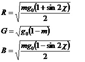
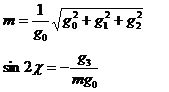
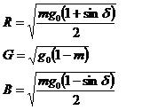
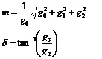
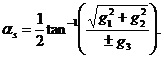
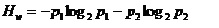
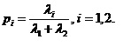
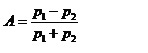
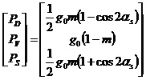
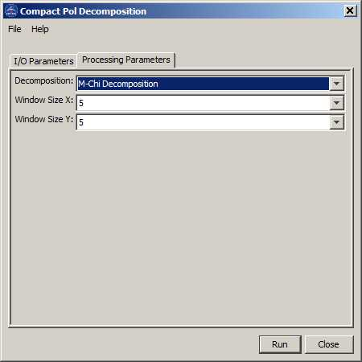

Compact Polarimetric Decomposition Operator
This
operator performs the following decompositions on compact pol data:
- m-chi decomposition
- m-delta decomposition
- H-Alpha decomposition
- 2-layer RVOG decomposition
The operator first computes Stokes vector [g0,
g1, g2, g3] for each pixel from the averaged covariance matrix, then
performs user selected decomposition.
m-chi Decomposition:

where

m-delta decomposition:

where

H-Alpha decomposition:

The wave entropy is computed from the eigen decomposition of the 2x2 covariance matrix C2. Let
λ1 and λ2 be the two eigen values, the entropy is given by

where

The compact pol anisotropy is defined by

RVOG decomposition:

Input and Output
- The
input to this operator should be a simulated compact polarimetric SAR
product in complex scattering vector or complex covariance matrix
format.
- The output of this operator is the m-chi, m-delta, H-Alpha or RVOG decomposition result represented by RGB
colours.
Parameters Used
The following processing parameters are needed (see Figure 1):
- Decomposition: m-chi, m-delta, H-Alpha or RVOG decomposition
- Window Size X: X dimension of the sliding window used in computing the mean covariance matrix
- Window Size Y: Y dimension of the sliding window used in computing the mean covariance matrix

Figure 1. Dialog box for
Compact Polarimetric Decomposition operator
Reference:
[1] R. K. Raney, J. T. S. Cahill, G. W. Patterson, and B. J. Bussey,
"The m-chi decomposition of hybrid dual-polarimetric radar data with
application to lunar craters", Journal of Geophysical Research, Vol.
117, E00H21, doi:10.1029/2011JE003986, 2012.
[2] R. K. Raney, "Hybrid-Polarity SAR Architecture", IEEE
transaction on Geoscience and Remote Sensing, Vol. 45, No. 11, Nov,
2007.
[3] S. R. Cloude, D. G. Goodenough, H. Chen, "Compact Decomposition
Theory", IEEE Geoscience and Remote Sensing Letters, Vol. 9, No. 1,
Jan. 2012.